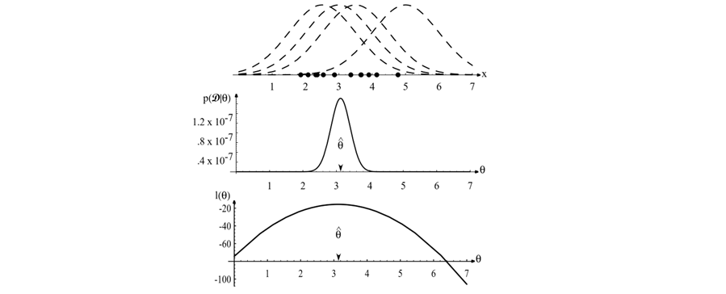

Maximum Likelihood Estimation#
In many pattern recognition problems, especially within the framework of Bayesian decision theory, we assume a specific parametric form for the class-conditional probability densities \(P(\mathbf{x} | \omega_i)\), but we don’t know the exact values of the parameters. For example, we might assume that the features \(\mathbf{x}\) for class \(\omega_i\) follow a multivariate Gaussian distribution \(N(\boldsymbol{\mu}_i, \boldsymbol{\Sigma}_i)\), but the mean vector \(\boldsymbol{\mu}_i\) and covariance matrix \(\boldsymbol{\Sigma}_i\) are unknown.
Maximum Likelihood Estimation (MLE) is a fundamental method for estimating the parameters of a probability distribution based on observed data. The core idea is to choose the parameter values that maximize the probability (or likelihood) of observing the actual training data we have.
Let \(\boldsymbol{\theta}\) represent the vector of unknown parameters for a distribution \(P(\mathbf{x} | \boldsymbol{\theta})\). Suppose we have a set of \(n\) training samples \(\mathcal{D} = \{\mathbf{x}_1, \dots, \mathbf{x}_n\}\), which are assumed to be drawn independently and identically distributed (i.i.d.) from \(P(\mathbf{x} | \boldsymbol{\theta})\).
The likelihood function, denoted \(L(\boldsymbol{\theta})\) or \(P(\mathcal{D} | \boldsymbol{\theta})\), represents the probability of observing the dataset \(\mathcal{D}\) given a specific choice of parameters \(\boldsymbol{\theta}\). Due to the independence assumption, the likelihood is the product of the probabilities of each individual sample:
The goal of MLE is to find the value of \(\boldsymbol{\theta}\) that makes the observed data \(\mathcal{D}\) “most likely”. The Maximum Likelihood Estimate (MLE) of \(\boldsymbol{\theta}\), denoted \(\hat{\boldsymbol{\theta}}_{MLE}\) or simply \(\hat{\boldsymbol{\theta}}\), is the value of \(\boldsymbol{\theta}\) that maximizes this likelihood function:
Log-Likelihood#
Maximizing the product \(L(\boldsymbol{\theta})\) can be difficult computationally and numerically (due to potential underflow with many small probabilities). Since the logarithm function \(\log(\cdot)\) is monotonically increasing, maximizing \(L(\boldsymbol{\theta})\) is equivalent to maximizing its logarithm, \(\log L(\boldsymbol{\theta})\). This logarithm is called the log-likelihood function, often denoted \(\ell(\boldsymbol{\theta})\):
Using the log-likelihood turns the product into a sum, which is usually much easier to work with, especially when taking derivatives. The MLE estimate is then found by:

Figure 3.1: The top graph shows several training points in one dimension, known or assumed to be drawn from a Gaussian of a particular variance, but unknown mean (\(\theta\)). Four of the infinite number of candidate source distributions \(p(x|\theta)\) are shown in dashed lines. The middle figure shows the likelihood \(p(\mathcal{D}|\theta)\) as a function of the mean parameter \(\theta\). If we had a very large number of training points, this likelihood function would become very narrow. The value that maximizes the likelihood is marked \(\hat{\theta}\); it also maximizes the logarithm of the likelihood — i.e., the log-likelihood \(l(\theta)\), shown at the bottom. Note especially that the likelihood \(p(\mathcal{D}|\theta)\) lies in a different space from \(p(x|\hat{\theta})\), and the two can have different functional forms. (Adapted from Duda, Hart & Stork).
Finding the Maximum#
If the log-likelihood function \(\ell(\boldsymbol{\theta})\) is differentiable with respect to the parameters \(\boldsymbol{\theta}\), we can typically find the maximum by:
Taking the derivative (or gradient if \(\boldsymbol{\theta}\) is a vector) of \(\ell(\boldsymbol{\theta})\) with respect to \(\boldsymbol{\theta}\).
Setting the derivative(s) equal to zero: \(\nabla_{\boldsymbol{\theta}} \ell(\boldsymbol{\theta}) = \mathbf{0}\).
Solving these equations for \(\boldsymbol{\theta}\).
(Optionally) Verifying that the solution corresponds to a maximum (e.g., using second derivatives).
Example: MLE for Multivariate Gaussian (Unknown Mean and Covariance)#
Let’s consider the important case where the feature vectors \(\mathbf{x}\) (within a specific class, although we omit the class index for now) are assumed to be drawn from a \(d\)-dimensional multivariate Gaussian distribution with unknown mean vector \(\boldsymbol{\mu}\) and unknown covariance matrix \(\boldsymbol{\Sigma}\). The parameters to estimate are \(\boldsymbol{\theta} = (\boldsymbol{\mu}, \boldsymbol{\Sigma})\).
The probability density function (PDF) for a single sample \(\mathbf{x}\) is:
where \(|\boldsymbol{\Sigma}|\) is the determinant of the covariance matrix.
Given an i.i.d. dataset \(\mathcal{D} = \{\mathbf{x}_1, \dots, \mathbf{x}_n\}\), the log-likelihood function \(\ell(\boldsymbol{\mu}, \boldsymbol{\Sigma})\) is:
Substituting the Gaussian PDF and using properties of logarithms:
To find the MLEs \(\hat{\boldsymbol{\mu}}\) and \(\hat{\boldsymbol{\Sigma}}\), we take the gradients with respect to \(\boldsymbol{\mu}\) and \(\boldsymbol{\Sigma}\) (or \(\boldsymbol{\Sigma}^{-1}\)) and set them to zero.
1. Estimating \(\boldsymbol{\mu}\): Taking the gradient with respect to \(\boldsymbol{\mu}\):
Using the identity \(\nabla_{\mathbf{z}} (\mathbf{a} - \mathbf{z})^T \mathbf{B} (\mathbf{a} - \mathbf{z}) = -2 \mathbf{B} (\mathbf{a} - \mathbf{z})\) (for symmetric \(\mathbf{B}\)), we get:
Setting the gradient to zero:
Since \(\boldsymbol{\Sigma}^{-1}\) is invertible (assuming \(\boldsymbol{\Sigma}\) is positive definite), this requires:
The MLE for the mean vector \(\boldsymbol{\mu}\) is the sample mean of the data.
2. Estimating \(\boldsymbol{\Sigma}\): Finding the MLE for \(\boldsymbol{\Sigma}\) involves matrix calculus. Taking the derivative of \(\ell\) with respect to \(\boldsymbol{\Sigma}^{-1}\) (often simpler) and setting it to zero, or directly with respect to \(\boldsymbol{\Sigma}\), and substituting the MLE \(\hat{\boldsymbol{\mu}}\) derived above, leads to the following result:
The MLE for the covariance matrix \(\boldsymbol{\Sigma}\) is the sample covariance matrix calculated using the MLE sample mean \(\hat{\boldsymbol{\mu}}\).
Important Note: The MLE estimate \(\hat{\boldsymbol{\Sigma}}\) is known to be a biased estimate of the true covariance matrix. The corresponding unbiased sample covariance uses a factor of \(1/(n-1)\) instead of \(1/n\). However, for MLE, the \(1/n\) factor is the correct one that maximizes the likelihood function. For large \(n\), the difference is small.
Application to Bayesian Classification#
In the context of Bayesian decision theory where we assume Gaussian class-conditional densities \(P(\mathbf{x} | \omega_i) \sim N(\boldsymbol{\mu}_i, \boldsymbol{\Sigma}_i)\), we apply MLE separately for each class \(\omega_i\) using its corresponding training data subset \(\mathcal{D}_i\) (containing \(n_i\) samples):
Estimate Priors: \(\hat{P}(\omega_i) = \frac{n_i}{n}\) (where \(n = \sum n_i\) is the total number of samples)
Estimate Mean for class \(i\): \(\hat{\boldsymbol{\mu}}_i = \frac{1}{n_i} \sum_{\mathbf{x}_k \in \mathcal{D}_i} \mathbf{x}_k\)
Estimate Covariance for class \(i\): \(\hat{\boldsymbol{\Sigma}}_i = \frac{1}{n_i} \sum_{\mathbf{x}_k \in \mathcal{D}_i} (\mathbf{x}_k - \hat{\boldsymbol{\mu}}_i) (\mathbf{x}_k - \hat{\boldsymbol{\mu}}_i)^T\)
Once we have these MLE estimates \(\hat{\boldsymbol{\mu}}_i\), \(\hat{\boldsymbol{\Sigma}}_i\), and \(\hat{P}(\omega_i)\) for all classes, we plug them into the Gaussian-based discriminant functions (e.g., quadratic or linear discriminant functions, depending on assumptions about covariance matrices) to classify new data points.
In summary: MLE provides a systematic way to learn the unknown probabilistic components (\(P(\mathbf{x} | \omega_i)\) parameters and \(P(\omega_i)\)) of a Bayesian classifier directly from labeled training data by choosing the parameter values that best explain that data. For the common case of assuming multivariate Gaussian distributions, the MLE estimates for the mean and covariance matrix are simply the sample mean and sample covariance calculated from the training data for each class.